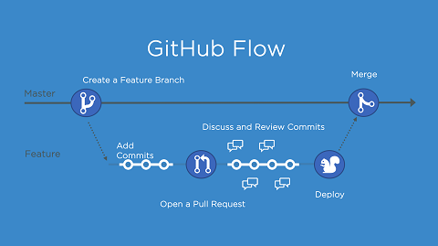

Fin kod
Fin kod alt. Clean code är ett begrepp som används för att beskriva hur man skriver kod. En definition av clean code är: “Clean code is code that is easy to understand and easy to change”. Vilket menar att kod ska vara lätt att förstå/läsa och att ändra. Detta är mycket viktigt för att ett projekt ska flyta på med så få problem som möjligt, det blir väldigt svårt att samarbeta när man inte kan först varandras arbete och hur man ska koppla dem till varandra. Skriver man istället kod som är lätt att följa och att ändra på så kan man enkelt se vad den gör och kan då anpassa snabbare samt att felsökning blir mycket enklare, när man lätt kan se vad som sker.
DOM
“När man laddar en webbplats så skapar webbläsaren en så kallad Document Object Model” med information om objekten och elementen sidan innehåller, vilket kan se ut på följande sätt:

Vilket gör det möjligt för JavaScript att komman åt alla element på websidan genom DOM trädet (se ovan), man kan ändra både CSS och html delen. Man kan i stort sett ändra vad som helst, ta bort och lägga till element styla om CSS delen och hämta input från element som användaren interagera med.
Ramverk
Ett ramverk är ett verktyg som kan innehålla kodbibliotek, program eller färdiga lösningar som används för att påskynda/underlätta utvecklingen. I vissa fall kan se det som en förbyggd struktur som hanterar de mer repetitiva delar i utvecklingen. Nedan kommer 2 exempel på ramverk
Bootstrap: är ett front-end ramverk som innehåller CSS, HTML och JavaScript där grunder för responsiv och mobilvänlig webbutveckling är lagd. Bootstrap är ett av de mest populära HTML-, CSS- och JavaScrip ramverken (möjligt det mest populära).
Angular: är ett ramverk för att skapa Single Page Applications, skrivet i TypeScript och utvecklat av Google. Angular gör det möjligt för användare att skapa stora applikationer på ett hållbart sätt.
Github flow
Det är ett arbetssätt som kan användas när man jobbar med GitHub. Enklast att förklara github flow är nog med följande bild:
Man börjar med att skapa en “branch” eller gren av projektet som man gör sina ändringar/tillägg i. När man känner att man är redo så öppnar man en Pull Request” där man kan be alla som har tillgång att se över det arbete man gjort, där de lämnar feedback och kontrollerar så allt stämmer och inte kommer skapa problem senare. När det är gjort och allt ser ok ut så kan man testa att koden fungerar i den miljö den tänkt användas, detta blir som ett slut test där man ser att allt verkligen fungerar. När allt det är gjort och inga fel finns så är det dags att lägga tillbaka din “branch” eller gren i huvudprojektet